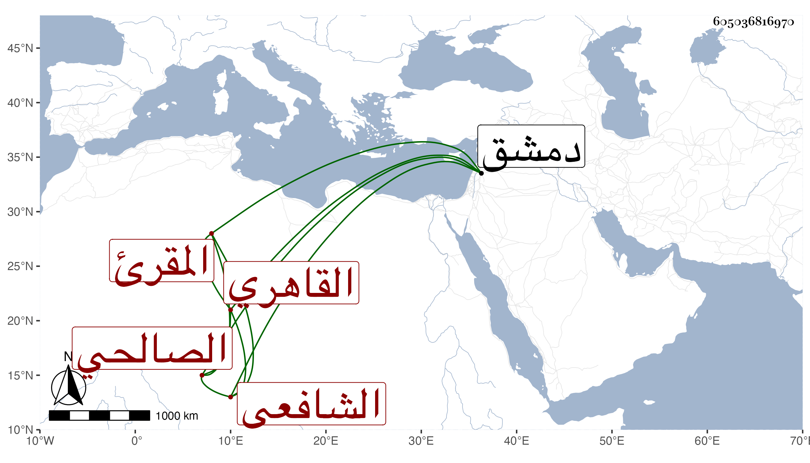

0902Sakhawi.DawLamic.ITO20230111-ara1.EIS1600.605036816970
Biography ID: 605036816970
253
محمد بن يحيى بن علي بن محمد بن أبي زكريا الشمس الصالحي ثم القاهري الشافعي المقرئ أخو أحمد الماضي مع تمام نسبه وحقيقة نسبته ويعرف بابن يحيى . ذكره شيخنا في أنبائه فقال : ولد قبل الستين وعني بالقراآت فأتقن السبع على جماعة وذكر لي أنه رحل إلى دمشق وتلا على ابن اللبان وطعن في ذلك بأن سنه تصغر عنه وكذا اشتغل بالفقه واستقر في تدريس الفقه بالبرقوقية برغبة الشيخ واجد له عنه بمبلغ كبير وفي إمامة القصر بعناية قطلوبغا الكركي لكونه قد اتصل به وأم به وكذا ناب بجاهه في الحكم أحيانا ثم ولي مشيخة القراء بالمؤيدية أول ما فتحت وما علمته تزوج بل كان مولعا بالمطالب ينفق ما يتحصل له فيها مع التقتير على نفسه . مات بعد أن كف بصره في أواخر عمره واختل ذهنه في سنة ثلاث وأربعين . قلت وبلغني أنه تزوج حارية الخواجا العامري قصدا لفعل السنة خاصة ثم فارقها عفا الله عنه .
